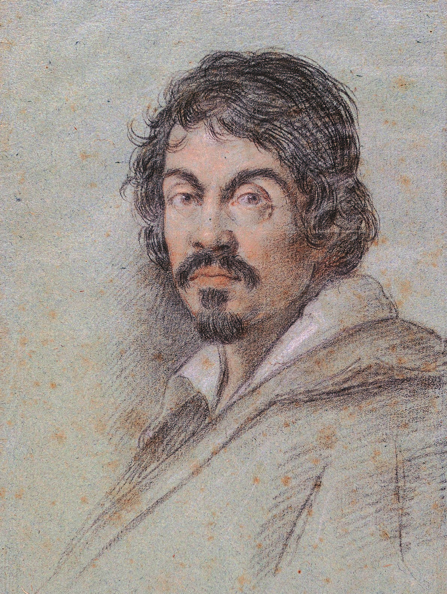

Michelangelo Merisi da Caravaggio dit "Le Caravage"
Michelangelo Merisi da Caravaggio, en français Caravage ou le Caravage, est un peintre italien né le 29 septembre 1571 à Milan et mort le 18 juillet 1610 à Porto Ercole.
Son œuvre puissante et novatrice révolutionne la peinture du xviie siècle par son caractère naturaliste, son réalisme parfois brutal et l'emploi appuyé de la technique du clair-obscur allant jusqu'au ténébrisme. Il connaît la célébrité de son vivant et influence nombre de grands peintres après lui, comme en témoigne l'apparition du caravagisme.
Il obtient en effet un succès foudroyant au début des années 1600 : travaillant dans un milieu de protecteurs cultivés, il obtient des commandes prestigieuses et des collectionneurs de très haut rang recherchent ses peintures. Mais ensuite Caravage entre dans une période difficile. En 1606, après de nombreux démêlés avec la justice des États pontificaux, il blesse mortellement un adversaire au cours d'un duel. Il doit alors quitter Rome et passe le reste de sa vie en exil, à Naples, à Malte et en Sicile. Jusqu'en 1610, l'année de sa mort à l'âge de 38 ans, ses peintures sont en partie destinées à racheter cette faute. Toutefois, certains éléments biographiques portant sur ses mœurs sont aujourd'hui revus, car des recherches historiques récentes remettent en cause le portrait peu flatteur qui a été longtemps propagé par des sources du xviie siècle et sur lesquelles on ne peut plus désormais se fonder.
Après une longue période d'oubli critique, il faut attendre le début du xxe siècle pour que le génie de Caravage soit pleinement reconnu, indépendamment de sa réputation sulfureuse. Son succès populaire donne lieu à une multitude de romans et de films, à côté des expositions et des innombrables publications scientifiques qui, depuis un siècle, en renouvellent complètement l'image. Il est actuellement représenté dans les plus grands musées du monde, malgré le nombre limité de peintures qui ont survécu. Toutefois certains tableaux que l'on découvre depuis un siècle posent encore des questions d'attribution.